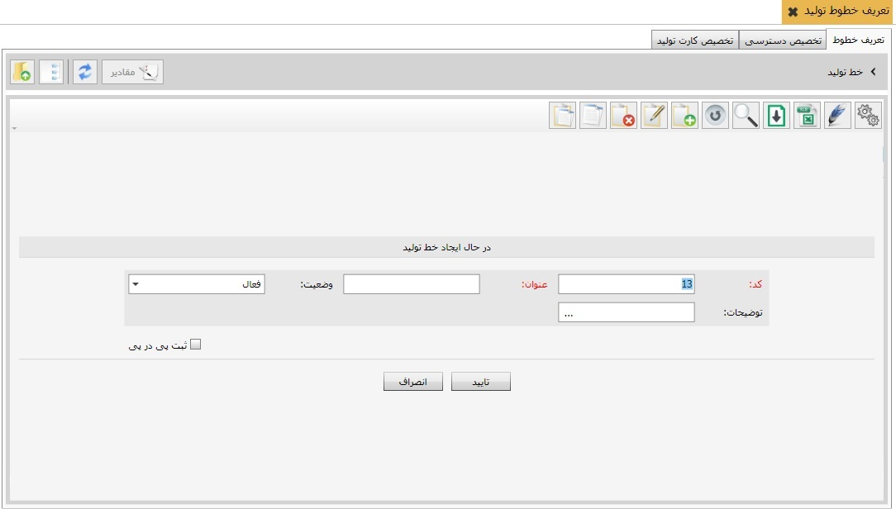
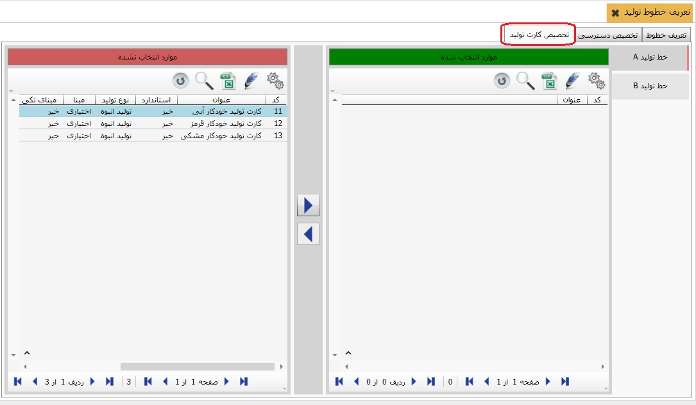

اگر یک مجموعه شامل چند خط تولید باشد در این بخش می توانید خطوط تولید را تعریف کنید، بخش خطوط تولید شامل سه تب می باشد که در زیر به شرح هر یک می پردازیم.
برای ایجاد یک خط تولید جدید در پنجره ی فوق، از نوار ابزار کلید اضافه را بزنید، پنجره ی زیر باز می شود:
اطلاعات جدول فوق را تکمیل نمایید سپس بر روی کلید تایید کلیک کنید، خط تولید مورد نظر شما ایجاد می شود
در این تب می توانید خطوط تولیدی که در تب اول تعریف کردید را به کاربر مورد نظر تخصیص دهید، برای این کار کافیست ابتدا کاربر مورد نظر خود را از سمت راست انتخاب کنید سپس از موارد انتخاب نشده خط تولید را انتخاب و به موارد انتخاب شده منتقل کنید.
در این تب می توانید کارت تولید ها را به خط تولید مورد نظر خود تخصیص دهید برای این کار ابتدا از سمت راست خط تولید مورد نظر خود را انتخاب کنید سپس از موارد انتخاب نشده کارت تولید را به خط تولید تخصیص دهید.